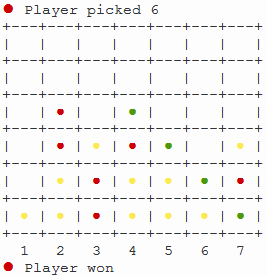
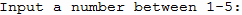
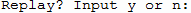
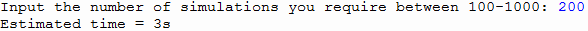
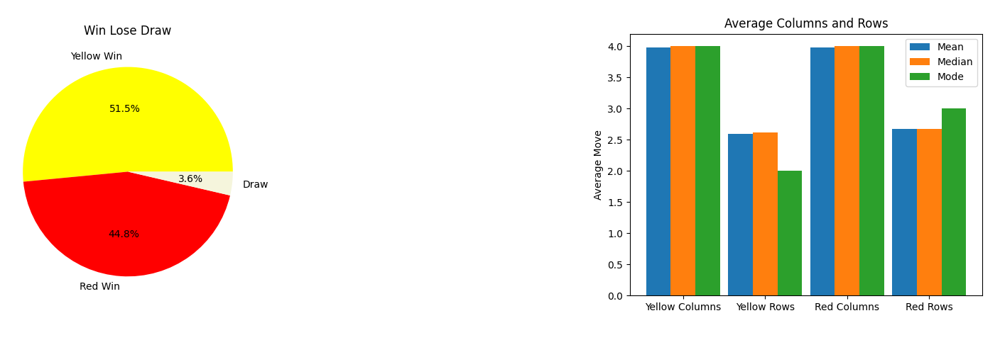
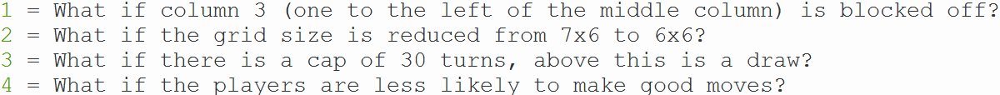

1. The player will be able to play the game to completion by picking columns for chips, if they pick the single player or multiplayer modes. The computer in the single player mode will play differently each time with approximately 25% of computer moves in single player being completely random. This fulfils basic requirement 1

2. The player will be able to choose a menu item (the first input) and will be asked for a number of simulations to run in the simulation mode. Then they will be asked their move in the single player, multiplayer modes and asked the graph type in the testing hypotheses and statistics modes (second input). Finally, the user will be asked if they what to replay the game the (third input). All the number inputs will be validated in a function I will call user_clean_data. This will check that they are integers between the values expected. Letter inputs (only used on the play_again function) will be validated by making the input lowercase and checking if it is “n” or “y” and this is then used to decide if a replay should take place. This fulfils basic requirement 2.
 
3. The user will be able to interact and operate with the game in each of the modes mentioned. They will be able to play the game in single player and multiplayer mode, that being the interaction. They will be able to pick a number of simulations in simulation mode. This fulfils basic requirement 3
Simulation

Multiplayer Single player
4. Each time that the game is played it will store the wins, draws or losses, the mean columns and rows for both yellow and red, the percentage defensive offensive and neutral moves for both players, how may turns the game took to complete and finally the game mode. All this data will be put in database.csv (a CSV file). This fulfils advanced requirement 1.
5. If the user picks the statistics mode, they will be given 4 options:
An example pie chart and bar chart:

6. Finally, if the user picks the testing hypotheses and changing parameters option, they will be given 4 options:

They can then test these hypotheses or use the changed parameters to make future predictions for example I would predict that the cap of 30 turns would increase draws by serval percentage points. This fulfils advanced requirement 3.